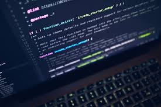

I had interest on AI which is one of the leading technologies in the present world.Artificial intelligence (AI) is the ability of a computer program or a machine to think and learn. It is also a field of study which tries to make computers "smart". They work on their own without being encoded with commands.John McCarthy came up with the name "artificial intelligence" in 1955. In general use, the term "artificial intelligence" means a machine which mimics human cognition. At least some of the things we associate with other minds, such as learning and problem solving can be done by computers, though not in the same way as we do. An ideal (perfect) intelligent machine is a flexible agent which perceives its environment and takes actions to maximize its chance of success at some goal or objective.As machines become increasingly capable, mental facilities once thought to require intelligence are removed from the definition. For example, optical character recognition is no longer perceived as an exemplar of "artificial intelligence": it is just a routine technology. At present we use the term AI for successfully understanding human speech, competing at a high level in strategic game systems (such as Chess and Go), self-driving cars, and interpreting complex data.Some people also consider AI a danger to humanity if it continues to progress at its current pace.
I had interest in competitive coding.competitive programming is a mind sport usually held over the Internet or a local network, involving participants trying to program according to provided specifications. Contestants are referred to as sport programmers. Competitive programming is recognized and supported by several multinational software and Internet companies, such as Googleand Facebook.There are several organizations who host programming competitions on a regular basis. A programming competition generally involves the host presenting a set of logical or mathematical problems to the contestants (who can vary in number from tens to several thousands), and contestants are required to write computer programs capable of solving each problem. Judging is based mostly upon number of problems solved and time spent for writing successful solutions, but may also include other factors (quality of output produced, execution time, program size, etc.)